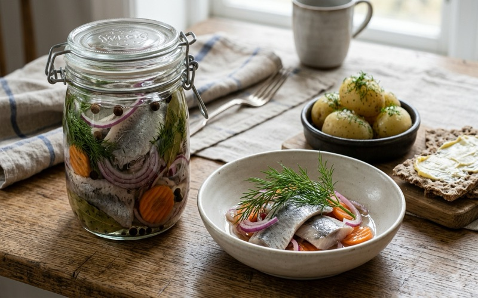
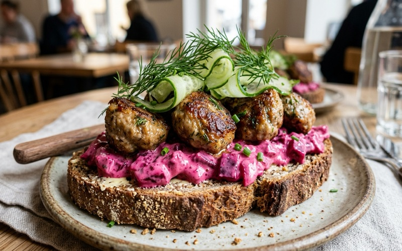

Högtider & Smörgåsbord
Högtider & Smörgåsbord
Västerbottensostpaj
Med löjrom, gräddfil & färsk dill
Frasigt pajskal fyllt med riven lagrad Västerbottensost och krämig gräddstanning. Självklar till midsommar och kräftskiva.
Recepten som förgyller midsommar, påsk, kräftskiva och julbordet. Krämig kantarellpaj, Västerbottensostpaj, gravad lax och Toast Skagen.
Högtider & Smörgåsbord
Med löjrom, gräddfil & färsk dill
Frasigt pajskal fyllt med riven lagrad Västerbottensost och krämig gräddstanning. Självklar till midsommar och kräftskiva.
 Högtider & Smörgåsbord
Högtider & Smörgåsbord
Med handskalade räkor, löjrom & dill
Tore Wretmans klassiker på smörstekt toast toppad med Kalixlöjrom, dill och citron.
 Högtider & Smörgåsbord
Högtider & Smörgåsbord
Med sötstark hovmästarsås & färsk dill
Sammetslen lax med havssalt, socker, vitpeppar och dill. Serveras med söt senapssås.
 Högtider & Smörgåsbord
Högtider & Smörgåsbord
Gula skogskantareller & lagrad Västerbottensost
Festens höjdpunkt under svampsäsongen och kräftskivan. Smörstekt pajskal fyllt med nystekta gula skogskantareller, lagrad Västerbottensost, schalottenlök och färsk timjan.
 Högtider & Smörgåsbord
Högtider & Smörgåsbord
Lax, torsk, fänkål, handskalade räkor & vitlöksaioli
En lyxig och krämig fisksoppa med gyllene saffran, vitt vin, färsk fänkål, purjolök, torskrygg, lax och handskalade räkor. Serveras med hemgjord vitlöksaioli.
 Högtider & Smörgåsbord
Högtider & Smörgåsbord
Tunt skivad potatis i vitlöksgrädde med gyllenbrunt osttäcke
En oemotståndlig, silkeslen och krämig potatisgratäng som aldrig blir torr. Tunt skivad mjölig potatis varvad med vitlök, grädde, mjölk och ett gyllenbrunt täcke av lagrad prästost eller Västerbottensost.

Högtider & SmörgåsbordTraditionell inlagd sill i klar 1-2-3 ättikslag med krispig rödlök & dill
Själva grundbulten på det svenska smörgåsbordet, till midsommar, jul och påsk! Fast och fin urvattnad sill i en perfekt balanserad klassisk 1-2-3 ättikslag med skivad rödlök, krispig morot, kryddpeppar och dill.

Högtider & SmörgåsbordSaftiga köttbullar på mörkt surdegsrågbröd med hemgjord rödbetssallad
Kungen av svenska smörgåsar och en självklar fikafavorit! Skivade saftiga smörstekta köttbullar på en bädd av krispigt salladsblad och hemgjord krämig rödbetssallad på ett grovt danskt rågbröd eller kavring, toppad med gurka och dill.